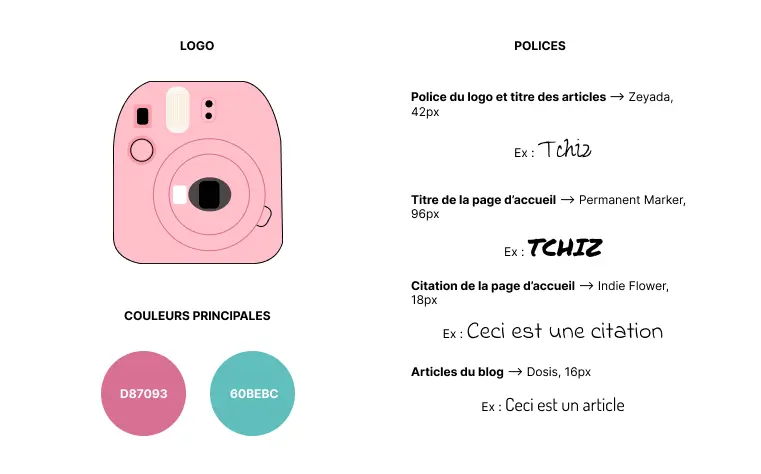

Création d'un blog (partiel et dans sa version statique)
Contexte


Dans le cadre du cours HTML/CSS avancé, il a été demandé de créer la partie "statique" d'un blog.
Processus
- Compréhension du "cahier des charges"
- Choix d'une thématique et d'une charte graphique
- Création des contenus
- Développement HTML/CSS des pages
Compréhension du "cahier des charges"
Dans le cadre de ce TP, la première étape a été de prendre connaissance des différents éléments à intégrer au sein du blog, dont voici la liste :
- concernant les pages :
- une page d'accueil affichant les derniers articles
- une page profil
- une page de création d'article avec formulaire
- une page de détail d'un article
- une page d'authentification avec formulaire
- une page de contact
- concernant le layout :
- des flexbox
- un layout en grid
- un menu avec un niveau de sous-menu au survol
- facultatif : une transformation en burger menu sur mobile
- concernant les features :
- un champ de recherche (coquille vide)
- un tableau de données quelconques
- au moins une vidéo Youtube dans un article
- une version responsive jusqu'à 360px
- une page imprimable propre
- au moins une police custom (intégrée localement ou via Google Fonts)
- au moins une animation
- des boutons de partage de réseaux sociaux
- un bandeau de gestion des cookies (sans interaction, juste le bandeau avec deux boutons sans action) : fait mais mis en commentaire afin de ne pas gêner la navigation
- un système de commentaires avec le nombre sur chaque article de la page d'accueil et la liste des commentaires sur le détail de l'article
Choix d'une thématique et d'une charte graphique
Ayant de l'intérêt pour différents sujets, j'ai choisi d'orienter le blog vers la thématique du "Lifestyle".
De ce choix s'est manifestée l'idée de "moments de vie" que j'ai décidé de symboliser par des "photos polaroïd", qui ont la caratéristique de "capturer l'instant présent". Dans cette logique, l'expression " Dîtes cheese" m'est apparue comme un nom potentiel pour le blog. J'ai opté pour ce nom dont j'ai modifié l'orthographe pour conserver l'écriture phonétique "Tchiz".
Concernant les couleurs, j'ai choisi d'utiliser des couleurs [que je qualifierais de] "girly", car elles m'évoquent joie, légèreté et optimisme.
Les polices d'écriture ont également fait l'objet d'une réflexion. Il s'agissait de proposer des polices proches d'une écriture manuscrite, à l'image de celles que l'on peut apercevoir dans un carnet posé sur un bureau. Les dessins, d'ailleurs, empruntent à cet univers : petites pinces, scotch, posts-its etc.
Ainsi, voici les éléments de la charte graphique du blog - incomplet soit-il - que j'ai imaginé :
Création des contenus
1 / Contenus visuels créés avec HTML/CSS
J'ai eu envie de proposer, au centre de la page d'accueil, le dessin d'un appareil photo polaroïd. Idéalement, je souhaitais qu'il soit possible d'interagir avec ce dernier à travers la prise d'une photographie qui ferait apparaitre le dernier article du blog. Je me suis appuyée sur une photographie d'un polaroïd afin de coder cet élément :
Comme mentionné dans le cahier des charges, il était demandé de concevoir un tableau de données quelconques. J'ai choisi d'intégrer cet élément au site via le design d'un calendrier.
2 / Contenus visuels créés avec Adobe Illustrator
Grâce à Adobe Illustrator, j'ai eu la possibilité de créer des contenus complémentaires pour l'ensemble des pages du blog :

3 / Contenu textuel : l'article de blog
N'hésitez pas à consulter l'article du blog qui a été entièrement rédigé à la main. Curieux ? Cliquez ici !
Développement HTML/CSS des pages
1 / L'animation : l'appareil photo polaroïd
L'ensemble du blog a été dévelopé en HTML/CSS. J'en ai cependant trouvé les limites lors du codage de l'appareil polaroïd : s'il est effectivement possible de "prendre une photo" uniquement lorsque l'obturateur est ouvert, l'utilisation de Javascript m'aurait été nécessaire pour rendre automatique la fermeture du déclencheur lorsque l'obturateur est lui-même fermé.
Pour tester l'appareil polaroïd, c'est par ici (en bas de page).
2 / La page imprimable
Vous avez aimé mon article et aimeriez en conserver une trace ? Comme demandé dans le cahier des charges, j'ai créé une version imprimable de celui-ci. Pour l'obtenir, cliquez ici et demander l'impression avec un clic droit.
Vous trouverez ci-dessous les visuels des trois maquettes, pour un format ordinateur, un format tablette et un format smartphone.
L'ensemble du site est consultable en cliquant ici.